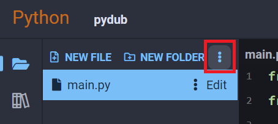
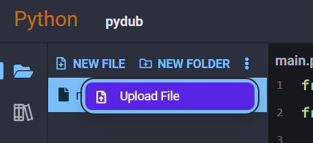
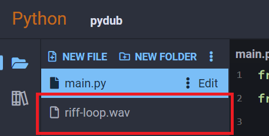
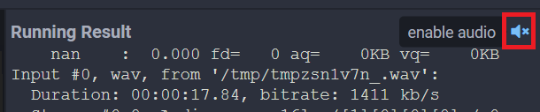
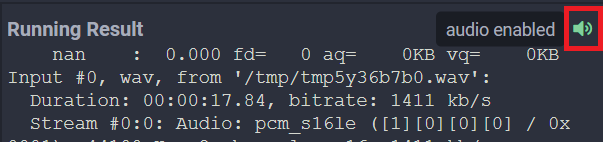

Pydub
Pydub is a Python library that allows you to edit audio files with a simple interface.
Note
Since this library uses sounds, you will need to upload your own music or music loop. For a quick sample, you can create an account on a website like SampleFocus and grab a royalty free sample.
Examples
Upload a Sound to Your Project
The first thing we need to do to use this package is have a sound to work with. We're going to use a sound obtained from a sample library, click here and make an account to download a sample or you can upload a song you already have on your computer.
After it's downloaded, open up the Python3 Editor and select Upload File from the dropdown at the top of your project's file list:


Find the sound you want to upload in your file browser, then confirm the upload was successful by finding the sound in your project's file list:

Get Sound Info
Similar to images with Pillow, we can use Pydub to extract and print information about audio files:
from pydub.utils import mediainfo
import os
info = mediainfo('riff-loop.wav')
print('Filename:', info['filename'])
print('Format:', info['format_name'])
print('Sample Rate:', info['sample_rate'])
print('File Size:', int(info['size']), "bytes")
Output:
Filename: riff-loop.wav
Format: wav
Sample Rate: 44100
File Size: 3146306 bytes
Play a Sound
Run the following code and your program will begin playing audio:
Note
make sure your file format matches the file you uploaded. If you uploaded an mp3, make sure you change the format to "mp3"
from pydub import AudioSegment
from pydub.playback import play
sound = AudioSegment.from_file('riff-loop.wav', format='wav')
play(sound)
Your output should look similar to this:
nan : 0.000 fd= 0 aq= 0KB vq= 0KB Input #0, wav, from '/tmp/tmpxyn846ga.wav':
Duration: 00:00:17.84, bitrate: 1411 kb/s
Stream #0:0: Audio: pcm_s16le ([1][0][0][0] / 0x0001), 44100 Hz, 2 channels, s16, 1411 kb/s
0.02 M-A: 0.000 fd= 0 aq= 176KB vq= 0KB
0.05 M-A: 0.000 fd= 0 aq= 176KB vq= 0KB
0.08 M-A: 0.000 fd= 0 aq= 176KB vq= 0KB
0.11 M-A: 0.000 fd= 0 aq= 176KB vq= 0KB
0.14 M-A: 0.000 fd= 0 aq= 176KB vq= 0KB
...
This is the raw text output of processing the audio stream. To actually hear the audio, you must click on the speaker icon on the top right of your running project:

You know if audio was successfully enabled if the speaker icon changes and turns green:

Modify a Sound
Every time you modify a sound, it creates a new AudioSegment. Let's try a basic edit where we reverse our sound:
from pydub import AudioSegment
from pydub.playback import play
sound = AudioSegment.from_file('riff-loop.wav', format='wav')
reversed_sound = sound.reverse() # need to store edit in new variable
play(reversed_sound)
The output will be similar to the previous example, except now the audio file will be playing in reverse.
Reference
- Pydub at pydub.com
- Pydub API Reference at github.com